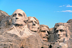
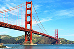
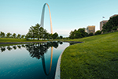

The Statue of Liberty is a colossal neoclassical sculpture on Liberty Island in New York Harbor in New York, in the United States.
Mount Rushmore National Memorial is a massive sculpture carved into Mount Rushmore in the Black Hills region of South
Dakota. Completed in 1941 under the direction of Gutzon Borglum and
his son Lincoln, the sculpture's roughly
60-ft.-high granite faces depict U.S. presidents George Washington, Thomas Jefferson, Theodore Roosevelt and Abraham
Lincoln.
Hoover Dam is a concrete arch-gravity dam in the Black Canyon of the Colorado River, on the border between the U.S. states of Nevada and Arizona.
The Golden Gate Bridge is a suspension bridge spanning the Golden Gate, the one-mile-wide strait connecting San Francisco Bay and the Pacific Ocean.
The Gateway Arch is a 630-foot monument in St. Louis, Missouri, United States. Clad in stainless steel and built in
the form of a weighted catenary arch, it is the world's tallest arch, the tallest
man-made monument in the
Western Hemisphere, and Missouri's tallest accessible building.